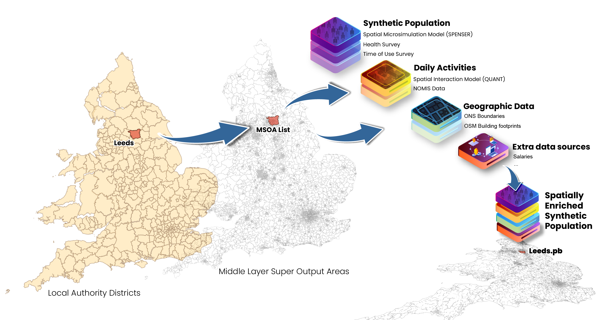

Synthetic Population Catalyst

The Synthetic Population Catalyst (SPC) makes it easier for researchers to work with synthetic population data in England. It combines a variety of data sources and outputs a single file in protocol buffer format, describing the population in a given study area. The data includes demographic, health, and daily activity data per person, and information about the venues where people conduct activities.
You can use SPC output to catalyze your own project. Rather than join together many raw data sources yourself and deal with missing and messy data, you can leverage SPC’s effort and well-documented schema.
To get started:
- Download sample data for a county in England
- Explore how to use the data
- If you need a different study area, build and then run SPC
You can also download this site as a PDF and find all code on Github.
This work is supported by Wave 1 of The UKRI Strategic Priorities Fund under the EPSRC Grant EP/W006022/1, particularly the “Ecosystem of Digital Twins” theme within that grant and The Alan Turing Institute.